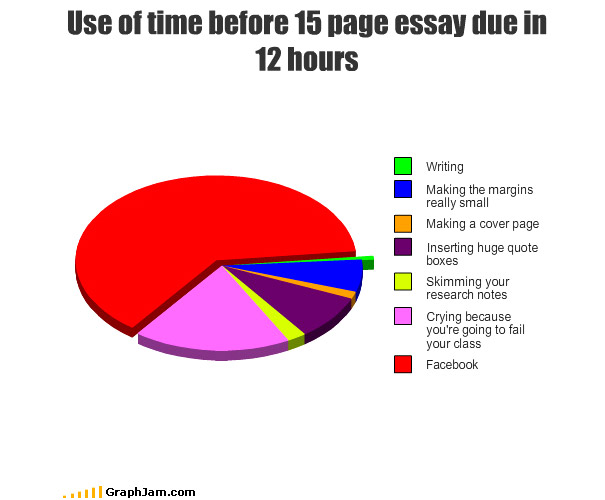
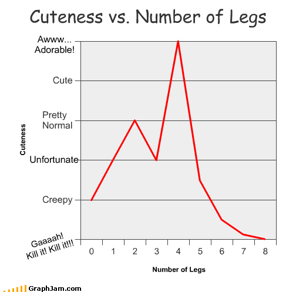

Introduction
In our project, we would like to use Reinforcement Learning in order to create a player which knows how to play the well known Pong game. Our goal is to create a good player which will be able to win a set of rounds against the "Optimal player" - a player which always move with the ball y-axis. In Addition, we would also like to check various state representations which will improve our results and learning time.
Approach and Method
Describe here how you addressed the problem, what observations or ideas you employed, what computational tools you used, etc... It it could simplify the presentation, go ahead and use several subsections here, or split this section into several sections.
Results
Describe and show here your results. You might want to add graphs and charts here, you can look at this example:
and another one:
Conclusions
Discuss the results vis-a-vis your goals and make conclusions.
Additional Information
- Link to the report (English or Hebrew) make sure that you haven't written your i.d. number or any other information that you don't want to be published!
- Any other link
References
List any references from the literature you have consulted or used.